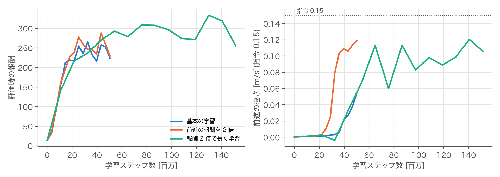
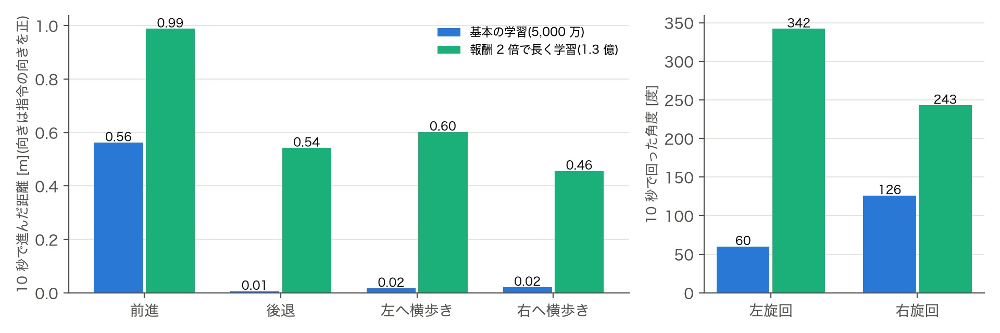
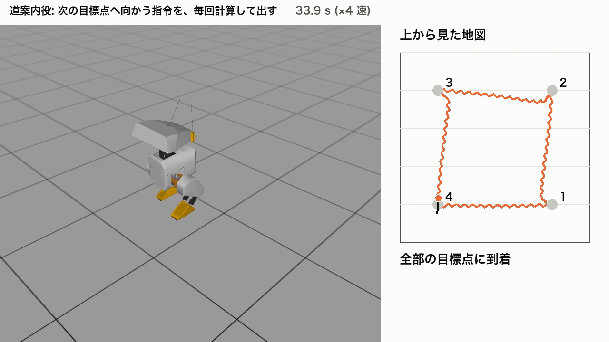
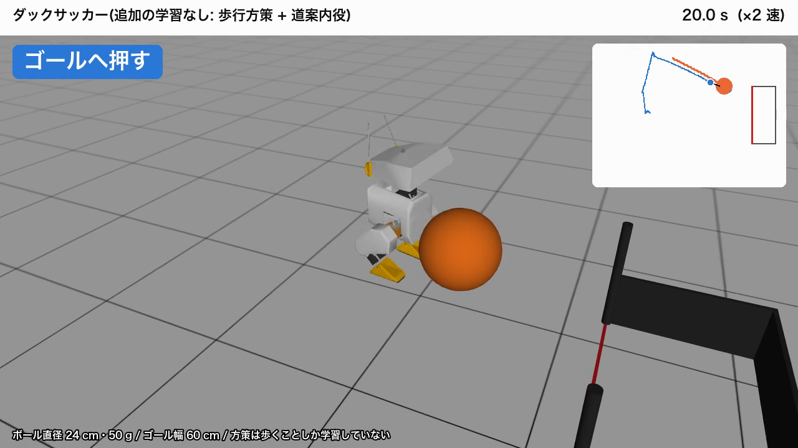

小型二足歩行ロボット Open Duck Mini v2 に、音楽に合わせたダンスや、ジャンプ・スキップのような高度な動きをさせることを目的とした。そのために、まず MuJoCo Playground と PPO で歩行を学習した(公開されている Open_Duck_Playground を再現し、報酬の重みと学習の長さを変えて比較した)。次に、学習済みの歩きは変えずに、上に制御を重ねて、点から点への移動・サッカー・ダンスをさせた。ジャンプとスキップ風の歩きにも挑戦したが、できなかった。その結果も測って残した。
external/ は未変更)。| 内容 | やったこと | 置き場所 |
|---|---|---|
| A. 前進の報酬を 2 倍にして学習 | 報酬の重み tracking_lin_vel(前後・横方向の速度指令への追従)だけを 2.5 → 5.0 に上書きし、旋回の追従(tracking_ang_vel 6.0)など他の報酬は公式のまま、 5,000 万ステップ学習し、基本の設定と比べた | configs/e004_tracking_lin_vel_x2.json、scripts/train_variant.py |
| B. 学習を長くする | A と同じ設定のまま 1.5 億ステップ(3 倍)まで学習した | 同上 |
| C. 学習なしの上位制御 | 道案内役・サッカー・ダンス(学習済みの方策に、指令だけを毎回計算して渡す) | scripts/navigator.py、striker.py、dance.py |
| D. 手本データの作り直しとスキップ風の挑戦 | Docker 上で手本の生成器を動かし、足の上げ幅を 4 cm → 8 cm にして学習した | scripts/refgen_sweep.py、train_variant.py --reference |
| E. 検証 | JAX の方策と ONNX の出力の一致検査、ジャンプの実測 | scripts/check_onnx_parity.py、jump_test.py |
進め方: どの実験も、測る前に「何をもって成功・失敗とするか」を docs/experiments.md に書いてから測った。失敗した実験も同じ表に残してある。本文の「E006」などは、その表の実験番号である。公開ポリシーの 0.089 m/s は自分で再生して測った値で、出所の主張値とは分けて扱った。
tracking_lin_vel 2.5、旋回 tracking_ang_vel 6.0)、立っていること alive 20、手本への追従 imitation 1.0、罰として関節トルク −0.001、動作の急変 −0.5、静止時の動き −0.2。手本は、歩行生成器が作った 240 通りの歩き方(速度ごと)から指令に近いものを引く。flat_terrain_backlash)を使った。ロバスト化の追加実験は行っていない。仮説: 公式設定では報酬の大半が「立っているだけ」の分(alive = 20)で、前に進む報酬が相対的に小さいため、前に進むことを覚えるのが遅い。判定(事前): 成功 = 5,000 万ステップ時点で転ばず 0.075 m/s 以上、かつ指令 0 で 10 秒に 0.05 m 以内しか動かない。

| 歩き始め(0.02 m/s 超え) | 5,000 万ステップの速さ | 30 秒後の向きのずれ | |
|---|---|---|---|
| 基本の学習(公式設定) | 39.6M | 0.056 m/s | +20° |
| 前進の報酬を 2 倍 | 28.8M | 0.119 m/s | +87°(左へ曲がる) |
| (参考)公開ポリシー、自分で再生 | — | 0.089 m/s | — |
結果と考察: 判定は 3 条件とも満たし成功。歩き始めが約 1,100 万ステップ早まり、速さは約 2.1 倍で、公開ポリシーも上回った。図 1 左のとおり、評価時の報酬は 2 つの学習でほとんど変わらないのに、右の前進の速さは大きく違う。報酬の合計が似ていても、中身(立つ分と進む分の配分)が違うため、報酬の値だけでは歩きの良し悪しを判断できなかった。副作用として、長く歩くと左へ曲がっていく癖(約 3°/秒)が出た。向きを保つ力と引き換えになった可能性があるが、原因までは調べていない。
仮説: 報酬 2 倍の設定でも、5,000 万ステップで後退・横歩き・旋回がほぼできないのは、学習量が足りないから。比べ方: 変えた報酬は tracking_lin_vel(前後・横方向の速度への追従)だけで、旋回の報酬など他は公式のまま。2 倍にした設定のまま、学習の長さだけを変える(5,000 万 → 1.5 億ステップ)。判定(事前): いずれかのチェックポイントが、後退 0.5 m 以上、左右の横歩き各 0.5 m 以上、左右の旋回各 180° 以上、前進 0.1 m/s 以上を同時に満たし、転倒しない。どれも改善しなければ失敗。

結果と考察: 報酬を変えず学習だけを延ばした橙 → 緑で、後退は 0.01 → 0.54 m、横歩きは左 0.24 → 0.60 m・右 0.20 → 0.46 m、旋回は左 101 → 342°・右 30 → 243° に増えた。学習量が不足していたという仮説は支持された。一方、青と橙を比べると、報酬 2 倍だけでも前進(0.56 → 1.19 m)と横歩きは増えたが、後退と旋回は増えず、右旋回は 126° → 30° に減った。つまり、図の青 → 緑の差は「報酬 2 倍」と「学習を長くする」の両方の効果が重なったものである。ただし、全項目を同時に満たすチェックポイントはなく、部分的成功だった。採用した 1.3 億ステップ版(sha256 先頭 cbbee2e3)は、前進 0.99 m(基準は 0.1 m/s = 1.0 m に僅かに足りない)、右への横歩き 0.46 m(基準 0.5 m に僅かに足りない)。ほかのチェックポイントでは、横歩きが左だけ・右だけ良くなるなど、チェックポイントごとに入れ替わった。以降の上位制御・動画はすべてこの 1 本の方策を使った。
方策は指令をどう使っているか: 学習途中の方策(報酬 2 倍・3,960 万ステップ)で、指令の値だけを差し替えて ONNX を再実行し、関節目標の変化を測った(前進中の観測 250 個、1 ステップだけの比較)。前後の指令は股関節ピッチと足首(平均 3.5°)、旋回は股関節ヨー(1.7°)、横は股関節ロール(1.2°)が反応し、指令と関節の対応は学習でついている。横・旋回は反応が小さく、追従が弱いことと合う。首の 4 つの指令は 0.3〜0.4° でほぼ無視されていた。報酬が付いていないためで、後のダンスで首の動きを直接サーボへ書いた理由になった。
方策が受け取れるのは速度指令(前後・横・旋回)と首の角度だけで、その指令に従って足を動かすことを学習している。そこで、方策には手を加えず、指令の出し方だけを変えることで新しいことをさせた。追加の学習は不要で、費用は 0 円。
0.02 秒ごとに、目標点までの距離 d と、ロボットの向きと目標の向きのずれ α を測る。旋回指令 = 2.5 × α(±1.0 で頭打ち)、前進指令は |α| が 20° 未満のときだけ 0.15 m/s(それ以外は 0)。ずれが大きければその場で向きを変え、合えば前進する、という単純な規則である。5 cm 以内に着いたら次の点へ進む。
結果: 4 点((1.0, 0)、(0.5, ±0.5)、(−0.5, 0))すべて 60 秒以内に到達、転倒なし(6.5〜8.9 秒)。直線からのずれは最大 2.7〜7.0 cm。4 点を順に回る動画(正方形)も作った。
道案内役の「目標点へ向かう」を、「ボールの後ろの点へ回り込み、ゴールの方向に向きを合わせて押す」に置き換えた。回り込み → 真後ろへ並ぶ → 押す、の 3 つの状態を切り替える(切り替えは行き来しないよう余裕を持たせた)。ボールは直径 24 cm・50 g、ゴールは幅 0.6 m。


結果: 調整に使った 5 か所は 4/5 ゴール(34〜84 秒、ダックの後ろにあったボールも回り込んで入れた)、1 回は転倒(ゴールポストにボールが挟まり、動かないのに押し続けて倒れた)。調整に使っていない 3 か所は 3/3 ゴール。部分的成功(転倒 1 回のため)。最初の 3 つの版は 0/5 で、原因は、その場で回ると胴体の基準点が足を軸に 5〜17 cm ずれ、状態の判定がぶれたことだった。位置を両足の中点で測るように直して解決した。
ボールの大きさは体の隙間で決まった: 半径 4 cm と 6.5 cm は足の間(11.7 cm)や胴体の下(11.5 cm)をすり抜け、8 cm は胴体の下端に乗り上げて転倒した。半径 12 cm で押せた。当初の予定(小さく軽く)とは逆に、大きくして解決した。
曲の拍(Fluffing a Duck 122 BPM、Monkeys Spinning Monkeys 144 BPM)に合わせて、「前進・後退・旋回・カニ歩き」の指令を、拍の数ごとに切り替える振り付け表を書いた(configs/dance_*.json)。歩きの周期は、1 歩が曲の 1 拍になるよう時計を速める(1.10〜1.30 倍)。首は報酬がなく方策が無視するため、正弦波をサーボへ直接書いた。音楽は ffmpeg で動画に合成した(Kevin MacLeod、CC BY 4.0、出典は動画と YouTube の概要欄に明記)。
結果: 2 曲それぞれ約 1 分、転倒なし。16 拍の旋回で +222°/−156°/+226°(Monkeys)。首を振りながら回ると回転がほぼ止まることが分かり(8 拍で約 35°、首なしは約 140°)、その組み合わせは振り付けから外した。
方策なしで、関節目標を手で書いた「しゃがむ → 一気に伸ばす」を 72 通り試した(MuJoCo、モーターの力の上限と速さも実機の設定どおり)。両足が同時に浮いた時間は最大 0.02 秒、足の裏の高さは最大 0.15 cm。判定の 1 cm に届かず、ジャンプはできないと結論した。バク転に要る約 11 cm・空中 0.3 秒は桁違いに遠い。足が短く、伸ばす勢いが前後に倒れる回転へ逃げることが原因と考える。なお、最初の測り方(足の基準点の上昇)では 3.3 cm と出たが、足が傾くだけで上がる量だったので、足の裏の最下点で測り直した。
本物のスキップは片足で跳ぶ瞬間があるので上記から不可能。代わりに、足を 8 cm 上げる手本を作り(Docker 上の Placo 0.6.3 で生成。同じ手順で標準の手本を作ると、公式データと 240 動作中 239 動作が 0.002 rad 以内で一致。残り 1 動作は公式データ側の右ひざが逆向きだった)、模倣の重みも 2 倍にして 1 億ステップ学習した。失敗: 足の裏の最大の高さは 0.43 cm(判定 2.5 cm、通常の歩きでも 0.8 cm)で、むしろ低くなった。手本の足の高さを方策はまねず、すり足に落ち着いた。足の高さそのものに点を与える報酬が要ると考えるが、締め切りのため実施していない。
scripts/train_variant.py(AWS g6.xlarge、configs/requirements-aws-train.txt の版: jax 0.7.0、brax 0.12.5、mujoco 3.3.4、playground 0.0.5)。再生・評価・動画は Mac(mujoco 3.17.0、playground 0.2.0、onnxruntime 1.31.1)。方策は sha256 先頭 8 桁で識別(docs/experiments.md)。docs/experiments.md、docs/notes.md、docs/specs/